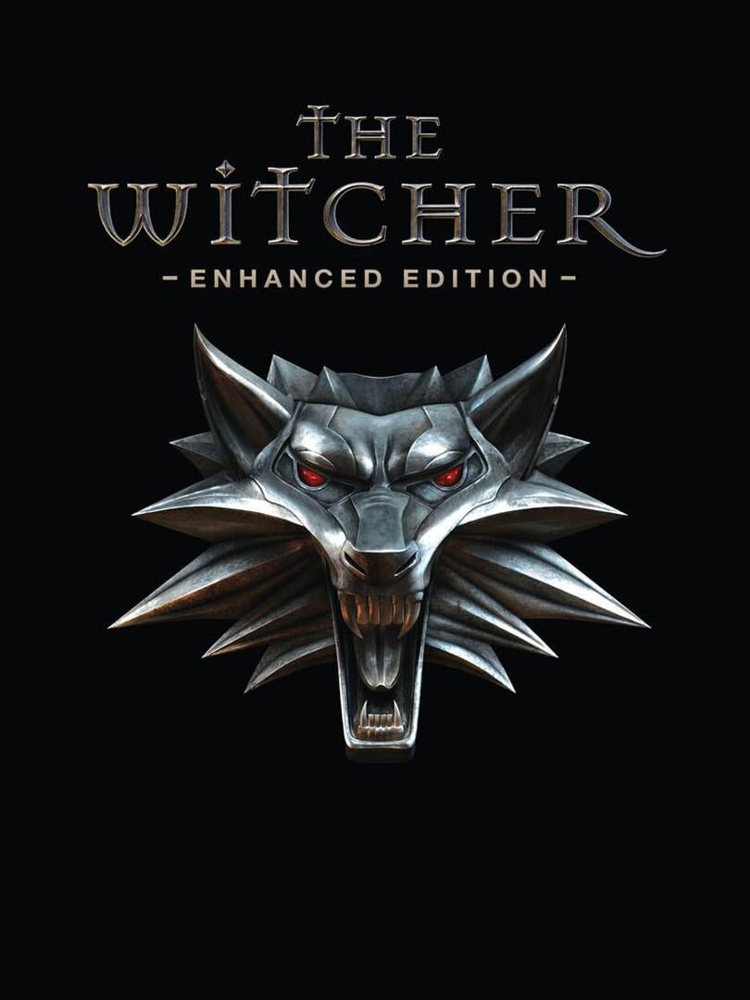

The Witcher: Enhanced Edition
The Witcher: Enhanced Edition
Details
|  | |
| Playtime | Not Played |
| Last Activity | Never |
| Added | 02/12/2022 9:35:48 |
| Modified | 17/05/2025 23:31:52 |
| Completion Status | Not Played |
| Library | Steam |
| Source | Steam |
| Platform | PC (Windows) |
| Release Date | 16/09/2008 |
| Community Score | 81 |
| Critic Score | 86 |
| User Score | |
| Genre | Adventure Role-playing (RPG) |
| Developer | CD Projekt RED |
| Publisher | Atari CD Projekt CD Projekt RED |
| Feature | Single Player |
| Links | Wikipedia Steam Official Website GOG Youtube Wikia |
| Tag | Action Action RPG Adventure Atmospheric Based On A Novel Choices Matter Classic Dark Fantasy Fantasy Great Soundtrack Magic Mature Medieval Multiple Endings Nudity Open World RPG Singleplayer Story Rich Third Person |
Description
The Witcher is a role-playing game set in a dark fantasy world where moral ambiguity reigns. Shattering the line between good and evil, the game emphasizes story and character development, while incorporating a tactically-deep, real-time combat system.
Become The Witcher, Geralt of Rivia, and get caught in a web of intrigue woven by forces vying for control of the world. Make difficult decisions and live with the consequences in a game that will immerse you in an extraordinary tale like no other.


ORIGINAL FANTASY WORLD DRAWN FROM LITERATURE
NON-LINEAR STORYLINE
STUNNING TACTICAL ACTION

The Witcher Enhanced Edition comes with these bonus items:
Become The Witcher, Geralt of Rivia, and get caught in a web of intrigue woven by forces vying for control of the world. Make difficult decisions and live with the consequences in a game that will immerse you in an extraordinary tale like no other.
KEY FEATURES
GERALT OF RIVIA: A ONE-OF-A-KIND PROTAGONIST- Take on the role of Geralt of Rivia: a charismatic swordmaster and professional monster slayer.
- Choose from over 250 special abilities, combat skills and magical powers to build a character best suited to your style of play.
ORIGINAL FANTASY WORLD DRAWN FROM LITERATURE
- Enter a harsh fantasy world inspired by the writings of renowned Polish author Andrzej Sapkowski, where nothing is truly black or white, right or wrong.
NON-LINEAR STORYLINE
- Immerse yourself in an epic narrative full of turns, twists and ambiguous moral decisions which have real impact on the storyline.
- Accomplish quests in a variety of ways and see how the narrative culminates in one of three different endings depending on your actions.
STUNNING TACTICAL ACTION
- Engage in elaborate, yet intuitive real-time combat based on real medieval sword-fighting techniques.
- Battle using six combat styles, dozens of potions, complex alchemy system, modifiable weapons and powerful magic which all add tactical depth to the fluid real-time experience.
- Motion capture performed by medieval fighting experts at Frankfurt's renowned Metric Minds studio, resulting in 600 spectacular and authentic in-game combat animations.
ABOUT THE WITCHER: ENHANCED EDITION
The Witcher: Enhanced Edition takes all of the acclaimed gameplay that garnered the original game more than 90 industry awards and introduces a number of gameplay and technical improvements.- Superior dialogue and cutscenes: Over 5000 rewritten and re-recorded lines of dialogue in English, completely redone German language version, as well as over 200 new gesture animations create a more consistent experience and make characters behave more believably in dialogue and cutscenes.
- Enhanced inventory: A separate sack for alchemy ingredients, as well as a simple sort-and-stack function streamline item organization and usage.
- Technical improvements: Numerous technical enhancements feature greatly reduced loading times, improved stability, combat responsiveness, faster inventory loading, an option to turn auto-saving on or off, and more.
- Character differentiation system: The system randomizes the appearance of dozens of in-game models in order to add more variety to monsters and NPCs.
The Witcher Enhanced Edition comes with these bonus items:
- An interactive comic book
- D'jinni Adventure Editor
- Two new adventures offering 5+ hours of gameplay
- Official Soundtrack
- “Music Inspired by The Witcher” album
- “Making of” videos
- Official Game Guide
- Two maps of The Witcher's world